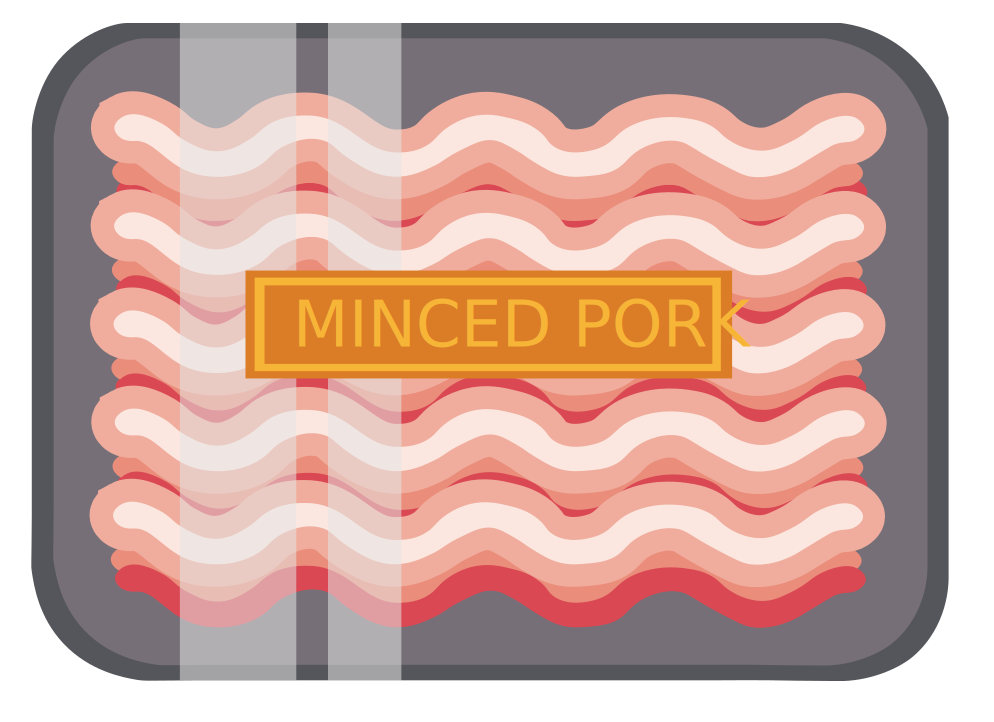

Why Ramen?
Ramen is the ultimate comfort dish! It is a family favourite and It is so worth the time. People often opt for having the minute ramen because of how conventient it is. I want to teach you an easy to learn recipe that takes no time at all and will blow that minute ramen out of the water.
Ingredients

High Fat Minced Pork
Garlic Cloves X 10
Ginger (5 Inch Knob)
Shallots X 2
Yellow Miso Paste (X 4 TBSP)
Sesame Seeds (2.5 TBSP)
Hon Dashi (2 TBSP)
Sugar (1 TBSP)
Chicken Stock (6 CUPS)
Salt
Pepper
Eggs X 4
Udon Noodles
Green Onions
Corn

Enoki Mushrooms
Preparation
- Take Your Pork and knead it with some salt and pepper to emulsify the meat.
- Heat a large pot (this pot will be what you serve the ramen out of) over medium-high heat completely dry.
- Once hot, add in ground pork and then press it down using a spatula. Sear each side 2-3 minutes without touchiing it. Flip and repeat.
- Break ground pork into small pieces using a potato masher or a spatula and cook until the pork is fully cooked and the fat has rendered out. Remove the pork and set aside.
- Dice the shallots, mince the garlic, and grate the ginger.
- Lower the heat on the pot to medium. Saute the vegtables for 3 minutes stirring occasionally.
- Once the vegtables are just cooked, add in the granulated sugar stirring and cooking until it is dissolved.
- Add the seseme seeds after the sugar is dissolved to slightly toast them.
- Add in the chicken stock, hon dashi, and miso paste. Stir until everything is combined and bring to a light simmer.
- Add salt and pepper to taste and the broth is done!
- For the corn, in a medium saucepan over medium add in unsalted butter and melt until lightly brown. Season to taste with salt.
- Immediately add the corn and continually stir to coat them in the butter. Do not overcook the corn it should still have some crunch to it.
- Add salt and pepper to taste.
- Bring a saucepan filled with water to a boil. Add the eggs in usng a large spoon so the shells do not crack. Cook uncovered for 7 minutes.
- Get a small bowl filled with some ice cubs and water.
- After the 7 minutes, remove the eggs from the water and place into your ice bath just until they are ready to be handled. Peel the eggs slowly to keep everything intact cut them in half to serve.
- Add a generous amount of salt to a pot of boliing water.
- Lower the ramen noodles into boiling water and boil according to the package instructions.

- Thinly slice the green onions and wash in cold water to take away the bitterness and bring out the sweetness of the onions.
- Add the cooked noodles to the bottom of a bowl along with your enoki mushrooms.
- Add the miso broth over the noodles and mushrooms.
- Top with your eggs, corn, green onions, and nori paper.